import sys
from pathlib import Path
import importlib
nb_folder = Path().resolve()
PROBLEM_NAME = nb_folder.name
parent_folder = nb_folder.parent
if str(parent_folder) not in sys.path:
sys.path.insert(0, str(parent_folder))Nonlinear Heat Conduction Problem with hyper-reduction, reduction and full order simulation

Environment Setup
Directories
Standard Imports
#Standard Imports and class import
from skrom.utils.imports import *
from skrom.rom.rom_utils import *
from skrom.utils.reduced_basis.svd import svd_mode_selector
from skrom.rom.rom_error_est import *
from skrom.fom.fem_utils import load_domain
from skrom.utils.visualization.color_palette import set_color_palette
from skrom.utils.visualization.plot_utils import *
import skrom.problem_classes.static.master_class as master
problem_mod = importlib.import_module(f"{PROBLEM_NAME}.problem_def") #- this runs @register_problem
# SKROM ROM (Reduced Order Modeling) core classes
from skrom.rom.linear_form_rom import LinearFormROM
from skrom.rom.ecsw.hyperreduce import hyperreduce
import skrom.rom.deim.deim as deim_module
from problem_def import ProblemNonLinear
# Problem-specific linear forms
from linear_forms import RPlot Properties
# # Define a custom color palette with 19 distinct colors
set_color_palette();Full Order Simulation
# Control flag for expensive simulation generation
generate = False
# Conditional execution block for simulation data generation
if generate:
# Create an instance of the non-linear heat conduction simulation
sim = master.fom_simulation(num_snapshots=16)
sim.run_simulation()Load Simulation Data
#Load the ROM_data
current_dir = Path().resolve()
rom_dir = current_dir / "ROM_data"
fos_solutions, sim_data = load_rom_data(self=None, rom_data_dir=rom_dir)[load_rom_data] loaded from D:\OneDrive - Texas A&M University\SKROM\scikit-rom\examples\heat_transfer\static\non_linear\problem_1_h\ROM_dataData Generation
Generate Training Solution Dataset
# Convert parameter list to a NumPy array (representing system parameters)
# This contains the parameter values for each simulation run (e.g., thermal conductivity,
# boundary conditions, material properties, etc.)
param_list = np.asarray(sim_data['param_list'])
# Load non-linear solutions from the full-order system
# NLS contains the high-fidelity finite element solutions for each parameter set
# Each row represents a complete solution snapshot (discretized spatial field)
NLS = np.asarray(fos_solutions)
# Split data into training and testing using predefined masks
# These boolean masks determine which snapshots are used for ROM training vs validation
train_mask, test_mask = sim_data['train_mask'], sim_data['test_mask']
# Apply masks to filter non-linear solutions for training and testing
# Training set: Used to construct the ROM basis functions and train the model
NLS_train = NLS[train_mask] # Training snapshots with Dirichlet boundary conditions applied
# Testing set: Used to evaluate ROM accuracy and performance on unseen data
NLS_test = NLS[test_mask] # Testing snapshots with Dirichlet boundary conditions applied
# Get the number of snapshots (parameter samples or time instances)
# N_snap: Total number of simulation snapshots available
# Second dimension: Number of degrees of freedom (DOFs) in the spatial discretization
N_snap, _ = np.shape(NLS)
# Display the total number of snapshots for verification
print(N_snap) # Print the number of snapshots available32Training Solution Snapshots
# Plot the computed temperature distribution
# Create a figure with specified dimensions (5x3.5 inches) for compact visualization
plt.figure(figsize=(5, 3.5))
# Extract spatial coordinates from the mesh data
# The mesh is stored as an object in sim_data, accessed via .item() to get the actual mesh
# mesh.p[0] contains the x-coordinates of the mesh nodes (1D spatial domain)
mesh_domain = sim_data['mesh'].item().p[0]
# Plot temperature profiles for all parameter combinations
# Loop through all non-linear solutions (each row is a complete temperature field)
for j in range(len(NLS)):
# Plot each temperature distribution as a line
# x-axis: spatial coordinates from the mesh
# y-axis: temperature values at each spatial location
# '-' specifies solid line style, markersize affects any markers
plt.plot(mesh_domain, NLS[j], '-', markersize=2)
# Set axis labels with proper mathematical notation
plt.xlabel("$x$") # Spatial coordinate (LaTeX formatting)
plt.ylabel("$T (K)$") # Temperature in Kelvin (LaTeX formatting)
# Display the plot
plt.show()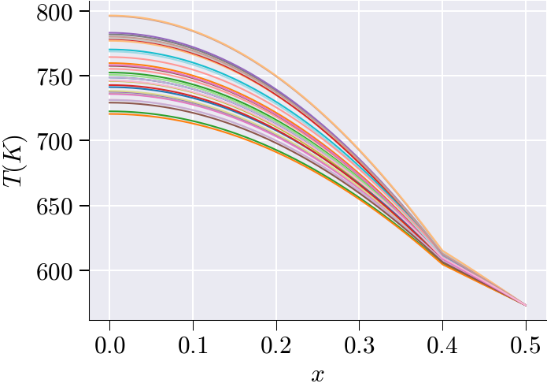
Mean Subtraction
# Compute the mean temperature field across all training snapshots
# This represents the "average" or "reference" temperature distribution
# Shape: [N_dof] - one mean value for each spatial degree of freedom
NLS_train_mean = np.mean(NLS_train, axis=0)
# Mean-center the training data by subtracting the mean field
# This creates fluctuations/deviations from the mean temperature distribution
# Shape: [N_train_snapshots, N_dof] - same as original but now mean-centered
# Each row now represents how much each snapshot deviates from the average
NLS_train_ms = NLS_train - NLS_train_mean
#We will use SVD on the mean subtracted matrix dataDistribution of the training parameters
# Visualize the parameter space distribution for training and testing data
# Plot training parameter combinations (first 16 samples)
# Extract first and second parameter columns for 2D visualization
plt.scatter(param_list[:16][:, 0], # First parameter (μ) for training samples which are the k_params
param_list[:16][:, 1], # Second parameter (β) for training samples which are the q_params
s=50, # Marker size
c='#163e64', # Dark blue color for training points
label="Training") # Legend label
# Plot testing parameter combinations (samples 17 and beyond)
plt.scatter(param_list[16:][:, 0], # First parameter (μ) for testing samples
param_list[16:][:, 1], # Second parameter (β) for testing samples
s=50, # Marker size (same as training)
c='#e97132', # Orange color for testing points
label="Testing") # Legend label
# Set axis labels using LaTeX formatting for mathematical notation
plt.xlabel("$\\mu$") # First parameter (often material property, conductivity, etc.) this is the k_params
plt.ylabel("$\\beta$") # Second parameter (often boundary condition, heat source, etc.) this is the q_params
# Add legend to distinguish between training and testing sets
plt.legend()
#See params and properties to see how these are used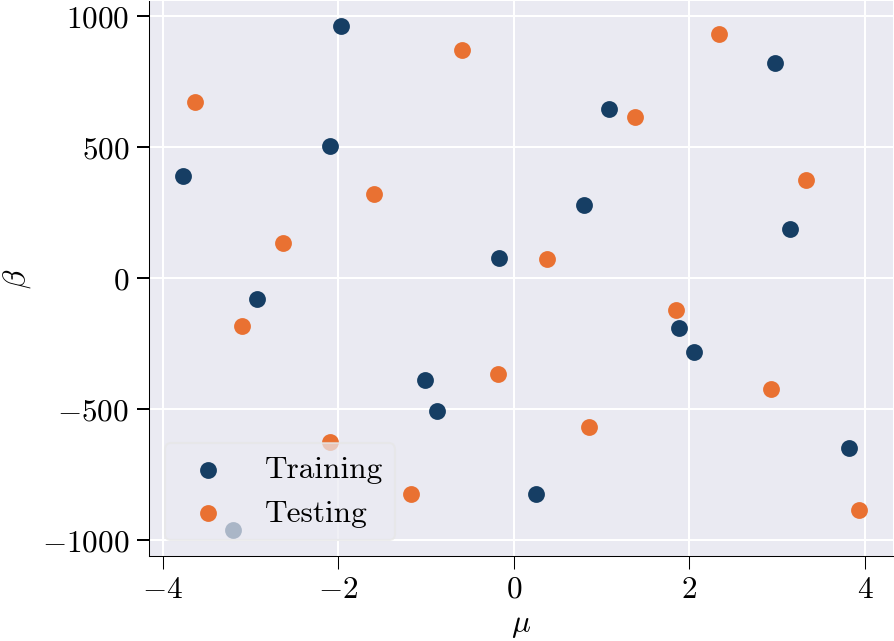
Training Snapshots after mean subtraction
# Create figure with subplot for better control over the plot
fig, ax = plt.subplots(figsize=(5, 3.5))
# Apply the custom color cycle to this specific plot
# This ensures consistent coloring with the earlier defined palette
# Extract spatial coordinates (degrees of freedom locations) from the finite element basis
# These represent the x-coordinates where the temperature values are computed
mesh_domain = sim_data['basis'].item().doflocs[0]
# Plot all mean-centered temperature profiles from the training set
for i in range(len(NLS_train_ms)):
# Plot each mean-centered temperature fluctuation profile
# x-axis: spatial coordinate locations (DOF locations)
# y-axis: temperature deviation from mean (fluctuations around zero)
# Commented line shows alternative approach using different coordinate system
# ax.plot(d.xi[0][:-1], LS_train_ms[i])
ax.plot(mesh_domain, NLS_train_ms[i])
# Set x-axis label with mathematical formatting
plt.xlabel('$x$') # Spatial coordinateText(0.5, 0, '$x$')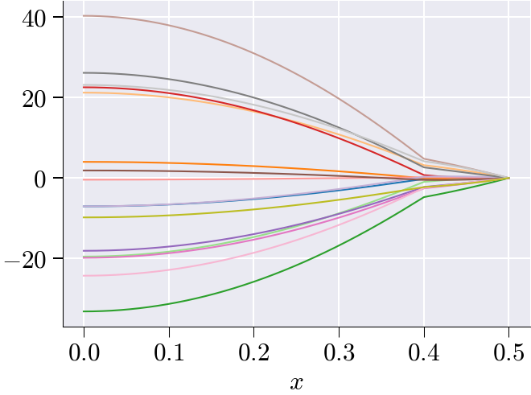
Performing SVD on training snapshots
# Configure plot styling for POD analysis visualization
plt.rcParams['lines.markersize'] = 6 # Set marker size for data points
plt.rcParams['lines.linewidth'] = 2.0 # Set line thickness for better visibility
# Perform Singular Value Decomposition (SVD) for POD mode selection
# SVD decomposes the mean-centered training data to find optimal basis functions
n_sel, U = svd_mode_selector(NLS_train_ms, # Input: mean-centered training snapshots
tolerance=1e-4, # Convergence criterion for mode selection
modes=True) # Return both number of modes and basis vectors
# Extract the selected POD basis vectors (spatial modes)
# V_sel contains the first n_sel most energetic POD modes
# Shape: [N_dof, n_sel] - each column is a spatial basis function
V_sel = U[:, :n_sel] # This will be passed to the ROM simulation function
# Set axis labels for the POD energy plot (generated by svd_mode_selector)
plt.ylabel('$1-r_{k}$') # Energy not captured by first k modes
plt.xlabel('POD modes ($k$)') # Number of POD modes retainedNumber of modes selected: 4Text(0.5, 0, 'POD modes ($k$)')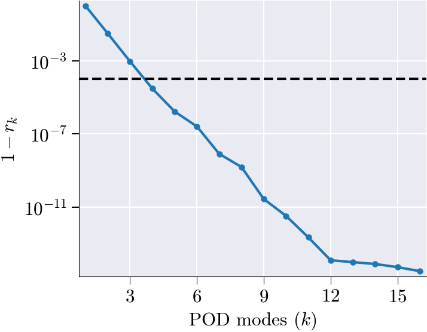
# Create figure and axis for POD modes visualization
fig, ax = plt.subplots()
# Plot all selected POD spatial modes
for i in range(n_sel):
# Plot each POD mode as a function of spatial coordinate
# x-axis: spatial locations (DOF coordinates)
# y-axis: POD mode amplitude at each spatial location
# lw=3: Use thick lines for better visibility of mode shapes
plt.plot(mesh_domain, V_sel[:, i], lw=3)
# Set axis labels with mathematical notation
ax.set_xlabel('$x$') # Spatial coordinate
ax.set_ylabel('$\\psi(x)$') # POD mode amplitude (basis function value)
# Control the number of y-axis ticks for cleaner appearance
# nbins=5: Limit to approximately 5 major tick marks on y-axis
ax.yaxis.set_major_locator(MaxNLocator(nbins=5))
# Display the plot
plt.show()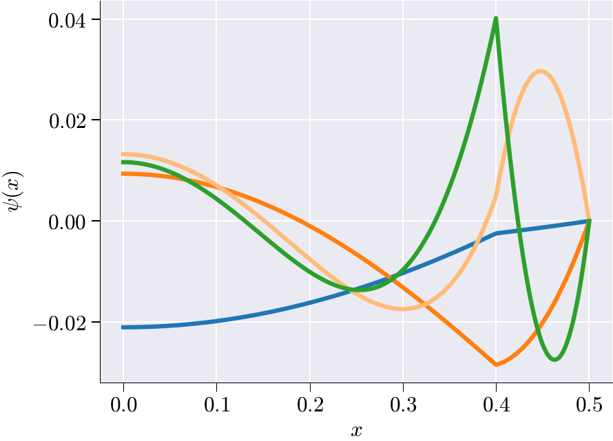
ROM Simulation
# Initialize the reduced-order model (ROM) simulation
# V_sel : precomputed basis matrix (e.g., selected POD modes)
# n_sel : number of basis vectors (modes) to retain in the ROM
rom = master.rom_simulation(V_sel=V_sel, n_sel = n_sel)[load_rom_data] loaded from d:\OneDrive - Texas A&M University\SKROM\scikit-rom\examples\heat_transfer\static\non_linear\problem_1_h\ROM_data# Run the reduced-order model (ROM) simulation.
# rom object will contain the NLS rom simulation solutions and other simulation aspects required by ROM such as the param_list etc.
generate = True
if generate:
rom.run_rom_simulation();
#Returns the Newton iteration errors just like full order simulationSnap 1/32 params=[ 1.85244951 -122.56331742]
[Newton] Iter 0, step norm = 9.268e+02
[Newton] Iter 1, step norm = 5.104e-01
[Newton] Iter 2, step norm = 2.329e-06
Snap 2/32 params=[ -1.58873209 320.13616711]
[Newton] Iter 0, step norm = 1.524e+03
[Newton] Iter 1, step norm = 5.561e+00
[Newton] Iter 2, step norm = 8.077e-05
Snap 3/32 params=[ -2.09780327 -626.47232227]
[Newton] Iter 0, step norm = 1.125e+02
[Newton] Iter 1, step norm = 4.953e-02
[Newton] Iter 2, step norm = 1.153e-09
Snap 4/32 params=[ 2.33405532 933.41469206]
[Newton] Iter 0, step norm = 1.273e+03
[Newton] Iter 1, step norm = 3.362e+00
[Newton] Iter 2, step norm = 2.637e-05
Snap 5/32 params=[ 3.93349164 -886.0525731 ]
[Newton] Iter 0, step norm = 1.031e+03
[Newton] Iter 1, step norm = 1.604e+00
[Newton] Iter 2, step norm = 5.615e-06
Snap 6/32 params=[ -3.63458695 672.85787873]
[Newton] Iter 0, step norm = 3.600e+03
[Newton] Iter 1, step norm = 3.540e+01
[Newton] Iter 2, step norm = 3.483e-03
Snap 7/32 params=[-1.78875804e-01 -3.66522145e+02]
[Newton] Iter 0, step norm = 2.113e+03
[Newton] Iter 1, step norm = 8.915e+00
[Newton] Iter 2, step norm = 2.004e-04
Snap 8/32 params=[ 0.38000161 75.2007775 ]
[Newton] Iter 0, step norm = 7.738e+01
[Newton] Iter 1, step norm = 1.063e-02
[Newton] Iter 2, step norm = 2.950e-10
Snap 9/32 params=[ 0.85532219 -569.00387257]
[Newton] Iter 0, step norm = 3.908e+02
[Newton] Iter 1, step norm = 2.633e-01
[Newton] Iter 2, step norm = 1.657e-07
Snap 10/32 params=[-5.87820172e-01 8.72039929e+02]
[Newton] Iter 0, step norm = 1.058e+03
[Newton] Iter 1, step norm = 2.193e+00
[Newton] Iter 2, step norm = 1.184e-05
Snap 11/32 params=[ -3.10067596 -182.282364 ]
[Newton] Iter 0, step norm = 8.593e+02
[Newton] Iter 1, step norm = 2.021e+00
[Newton] Iter 2, step norm = 1.153e-05
Snap 12/32 params=[ 3.33314341 375.94890781]
[Newton] Iter 0, step norm = 2.455e+03
[Newton] Iter 1, step norm = 1.118e+01
[Newton] Iter 2, step norm = 2.831e-04
Snap 13/32 params=[ 2.93049683 -422.3349411 ]
[Newton] Iter 0, step norm = 1.212e+02
[Newton] Iter 1, step norm = 1.192e-02
[Newton] Iter 2, step norm = 1.025e-09
Snap 14/32 params=[ -2.63562099 134.9197682 ]
[Newton] Iter 0, step norm = 2.412e+03
[Newton] Iter 1, step norm = 1.509e+01
[Newton] Iter 2, step norm = 6.186e-04
Snap 15/32 params=[ -1.17588099 -824.6778734 ]
[Newton] Iter 0, step norm = 1.063e+03
[Newton] Iter 1, step norm = 2.317e+00
[Newton] Iter 2, step norm = 1.400e-05
Snap 16/32 params=[ 1.38103566 615.3893657 ]
[Newton] Iter 0, step norm = 5.412e+02
[Newton] Iter 1, step norm = 6.446e-01
[Newton] Iter 2, step norm = 1.023e-06#Assign values for the statistics
NLS_rom = np.asarray(rom.rom_solutions)
ROM_speed_up = rom.speed_up
ROM_speed_up=ROM_speed_up
ROM_relative_error = rom.rom_errorROM solution vs. Full order solution performance statistics
# --- Standard ROM error analysis ---
# Compute a flat matrix of error metrics comparing true nonlinear solutions to ROM approximations
matrix = compute_rom_error_metrics_flat(NLS_test, NLS_rom)
# Produce a text-based report summarizing these error metrics
generate_rom_error_report(matrix)
# Plot diagnostic figures: error vs. speed-up for the standard ROM
plot_rom_error_diagnostics_flat(
NLS_test, # full-order (true) solution snapshots
NLS_rom, # ROM-generated solution snapshots
ROM_relative_error, # precomputed relative error of the ROM
ROM_speed_up, # precomputed speed-up factor of the ROM
sim_axis=['True', 'ROM'],
metrics=matrix # the matrix of error metrics just computed
)===================
ROM Accuracy Report
===================
Global Errors:
L2 Error: 6.0581e-04
Relative L2 Error: 4.9757e-08
L∞ Error: 1.4042e-04
Relative L∞ Error: 1.7630e-07
RMSE: 3.4127e-05
MAE: 2.4343e-05
Statistical Fit:
R² Score: 1.0000
Explained Variance: 1.0000
Error Distribution:
Median Error: 2.6836e-07
95th Percentile Error: 6.8905e-05
Time/Parameter-Dependent Errors:
Average Rel L2 Error over time/parameter: 2.5054e-09
Max Rel L2 Error over time/parameter: 7.8251e-09
Min Rel L2 Error over time/parameter: 3.5994e-10
――――――――――――――――――――――――――――――――――――――――――――――――――――――――――――――――――――――――――――――――――――――――――――――――――――――――――――――――――――――――――――――――――――――――――――――――――――――――――――――――――――――――――――――――――――――――――――――――――――――――――――――――――――――――――――――――――――――――――――――――――――――――――――――――――――――――――――――――――――――――――――――――――――――――――――――――――――――――――――――――――――――――――――――――――――――――――――――――――――――――――――――――――――――――――――――――――――――――――――――――――――――――――――――――――――――――――――――――――――――――――――――――――――――――――――――――――――――――――――――――――――――――――――――――――――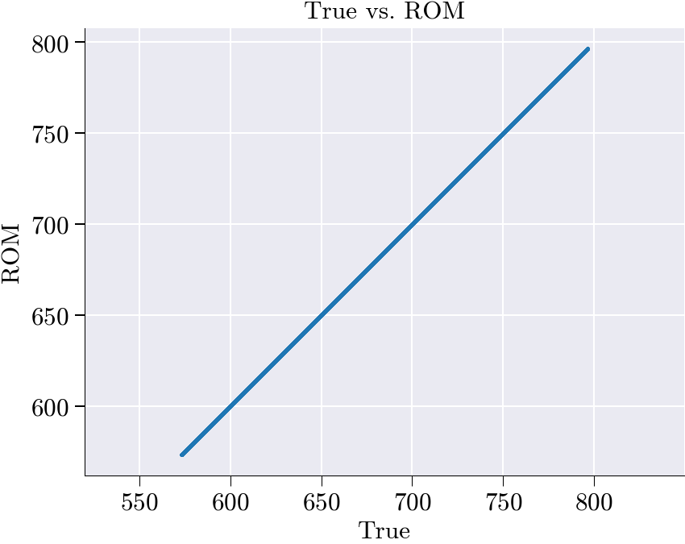
spatial_shape not given → skipping spatial snapshots.
--------------------------------------------------------------------------------------------------------------------------------------------------------------------------------------------------------------------------------------------------------------------------------------------------------------------------------------------------------------------------------------------------------------------------------------------------------------------------------------------------------------------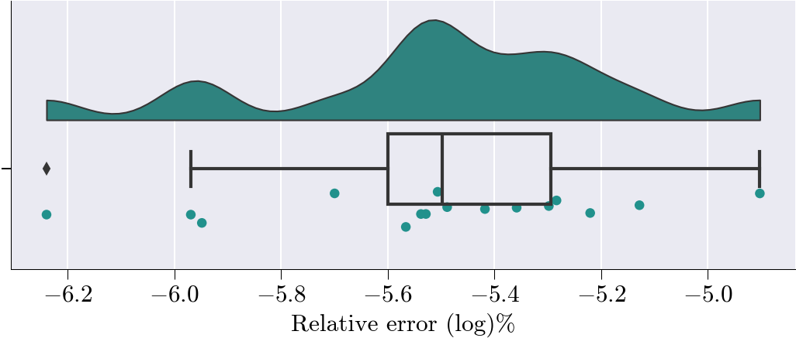
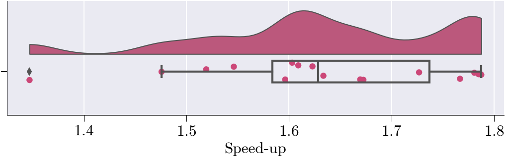
Hyper ROM Simulation
1. ECSW
Mesh Sampling
prob = ProblemNonLinear()
sim_data['free_dofs'] = prob.domain()['free_dofs']
sim_data['dirichlet_boundary_dofs'] = prob.domain()['dirichlet_boundary_dofs']
sim_data['global_mask'] = prob.domain()['global_mask']
# Extract free degrees of freedom (DOFs)
free_dofs = sim_data['free_dofs']
basis = sim_data['basis'].item()# Create the ROM residual linear form object
# This represents the linear form R(u,v) in the weak formulation of the PDE
Residual = LinearFormROM(R, # Linear form function from problem definition
basis, # Finite element basis functions
V_sel, # Selected POD modes (reduced basis)
free_dofs=free_dofs) # Free DOFs (excluding Dirichlet boundaries)
# Extract parameter values corresponding to training snapshots
# Uses the boolean mask to get only the parameter combinations used for training
training_params = param_list[train_mask]# Collect residual evaluations for all training snapshots
# This creates the dataset needed for hyperreduction of nonlinear ROM terms
q_mus = collect_residuals(
NLS_train_ms, # Mean-centered training snapshots
NLS_train_mean, # Mean temperature field
V_sel, # Selected POD basis modes
reconstruct_solution, # Solution reconstruction function
Residual, # ROM residual operator
training_params,
prob.assemble_kwargs,
extra_kwargs = dict(global_mask = sim_data['global_mask'] )
)
# Display the shape of collected residuals for verification
# Shape should be: (n_training_snapshots * SVD components, n_residual_evaluation_points)
print(q_mus.shape)
#Output should be 16(for training snapshots) * 5(SVD components selected) = 80(64, 5041)Performing the SVD on snapshots
print("Performing SVD...")
# Performs Singular Value Decomposition on q_mus matrix
# Returns U (left singular vectors), s (singular values), Vh (right singular vectors transposed)
Uh, s, Vh = np.linalg.svd(q_mus, full_matrices=False)
# Plots singular values on a logarithmic y-scale to visualize their decay
# This helps identify the effective rank/dimensionality of the matrix
plt.semilogy(s, 'o-')
# Takes the first 20 right singular vectors (rows of Vh)
# This creates a reduced basis capturing the most significant modes
V_q_eff = Vh[:20]
# Computes a weighted combination of the basis vectors
# Each basis vector is weighted equally (multiplied by 1)
# This essentially sums all 20 basis vectors
d_q = V_q_eff @ np.ones(V_q_eff.shape[1])
# Outputs the L2 norm of the resulting vector
# This gives a sense of the magnitude of the combined basis representation
print("magnitude of d_q:", np.linalg.norm(d_q))Performing SVD...
magnitude of d_q: 70.99999999992622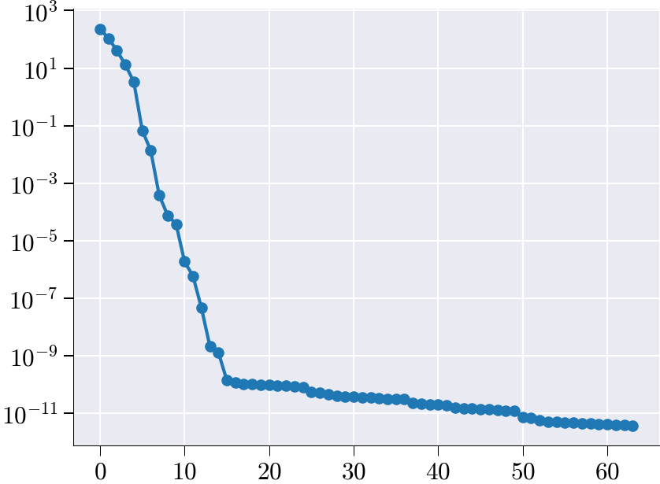
NNLS matrix
# Solve the non-negative least squares (NNLS) problem using hyperreduce
# V_q_eff : effective basis matrix
# verbosity : level of log output (2 = detailed)
# const_tol : tolerance for column selection
# zero_tol : tolerance to treat values as zero
# plot : disable plotting
x_nnls_m, err = hyperreduce(
V_q_eff,
verbosity=2,
const_tol=1e-8,
zero_tol=1e-8,
plot=False
)
# Compute and print the relative NNLS reconstruction error:
# ‖q_mus·(x_nnls_m – 1)‖ / ‖q_mus·1‖
rel_error = np.linalg.norm(q_mus @ (x_nnls_m - np.ones_like(x_nnls_m)))
rel_error /= np.linalg.norm(q_mus @ np.ones_like(x_nnls_m))
print("NNLS error:", rel_error)NNLSSolver init (Sequential Version)
Starting NNLS solve...
0 0 20 5041 0 7.034217105148348e+01 7.099999999992622e+01
1 1 20 5041 1 7.018078805633876e+01 7.086855392105247e+01
2 2 20 5041 2 6.971188613212875e+01 7.059966862765592e+01
3 3 20 5041 3 6.520806555807378e+01 6.839315257011485e+01
4 4 20 5041 4 6.238242631925726e+01 6.672155810716249e+01
5 5 20 5041 5 6.071203653582197e+01 6.580078931862977e+01
6 6 20 5041 6 5.664682167368151e+01 6.365442268803532e+01
7 7 20 5041 7 5.328089062476627e+01 6.199537790727862e+01
8 8 20 5041 8 4.658398109092573e+01 5.736098769587463e+01
9 9 20 5041 9 3.376839671447796e+01 4.983538410302487e+01
10 10 20 5041 10 2.621808921032334e+01 3.421671411442028e+01
11 11 20 5041 11 1.357887602229871e+01 2.212741975437655e+01
12 12 20 5041 12 1.364546214155895e+01 2.129002443069247e+01
13 13 20 5041 13 2.099907833149860e+00 4.721820482820130e+00
14 14 20 5041 14 1.752587157214067e+00 3.544356613040957e+00
15 15 20 5041 15 1.760088087176402e+00 3.087610280568040e+00
16 16 20 5041 16 2.093050851942377e+00 2.883823863624941e+00
17 17 20 5041 17 3.225286249019733e-01 6.677008767481507e-01
18 18 20 5041 18 1.653517381900365e-01 2.557924396963228e-01
19 19 20 5041 19 1.265852261773177e-01 1.971949388731335e-01
20 20 20 5041 20 -9.999987961018981e-09 2.262624669056795e-14
Target tolerance met
NNLS converged.
Solve complete with exit flag: 0
Number of nonzero elements in x: 20 out of 5041
Hyper-reduced error (normalized): 3.186795308534009e-16
NNLS error: 1.3625643903135772e-07Plot Reduced Meshes with weights
fig, ax = plot_ecsw_weights(x_nnls_m)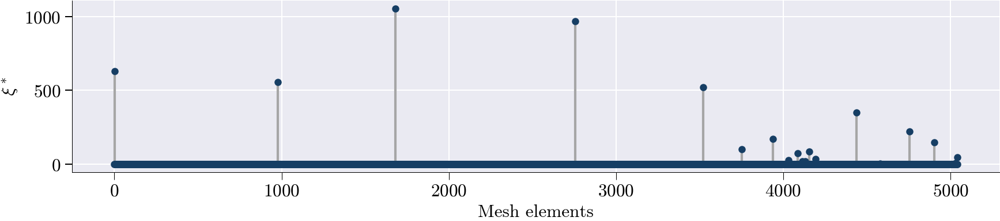
Run HyperROM simulation
# Run the hyper-reduced ROM simulation using the NNLS weights
# x_nnls_m : array of non-negative least squares coefficients,
# used here to weight the reduced basis contributions
#rom will contain the hyper_rom solution as an attribute
rom.run_hyper_rom_simulation_ecsw(x_nnls_m);
#rom.run_hyper_rom_simulation(x_nnls_m)Snap 1/32 params=[ 1.85244951 -122.56331742]
[Newton] Iter 0, step norm = 7.466e+02
[Newton] Iter 1, step norm = 1.985e+01
[Newton] Iter 2, step norm = 3.299e-01
[Newton] Iter 3, step norm = 1.031e-02
[Newton] Iter 4, step norm = 1.712e-04
Snap 2/32 params=[ -1.58873209 320.13616711]
[Newton] Iter 0, step norm = 1.525e+03
[Newton] Iter 1, step norm = 1.374e+01
[Newton] Iter 2, step norm = 1.095e+00
[Newton] Iter 3, step norm = 1.214e-02
[Newton] Iter 4, step norm = 9.801e-04
Snap 3/32 params=[ -2.09780327 -626.47232227]
[Newton] Iter 0, step norm = 1.088e+02
[Newton] Iter 1, step norm = 4.415e+00
[Newton] Iter 2, step norm = 6.231e-02
[Newton] Iter 3, step norm = 4.541e-03
Snap 4/32 params=[ 2.33405532 933.41469206]
[Newton] Iter 0, step norm = 1.281e+03
[Newton] Iter 1, step norm = 1.554e+01
[Newton] Iter 2, step norm = 6.019e-01
[Newton] Iter 3, step norm = 7.299e-03
Snap 5/32 params=[ 3.93349164 -886.0525731 ]
[Newton] Iter 0, step norm = 1.028e+03
[Newton] Iter 1, step norm = 5.531e+00
[Newton] Iter 2, step norm = 3.026e-01
[Newton] Iter 3, step norm = 2.120e-03
Snap 6/32 params=[ -3.63458695 672.85787873]
[Newton] Iter 0, step norm = 3.600e+03
[Newton] Iter 1, step norm = 5.157e+01
[Newton] Iter 2, step norm = 3.599e+00
[Newton] Iter 3, step norm = 6.497e-02
[Newton] Iter 4, step norm = 4.768e-03
Snap 7/32 params=[-1.78875804e-01 -3.66522145e+02]
[Newton] Iter 0, step norm = 2.115e+03
[Newton] Iter 1, step norm = 1.986e+01
[Newton] Iter 2, step norm = 1.307e+00
[Newton] Iter 3, step norm = 1.306e-02
[Newton] Iter 4, step norm = 8.999e-04
Snap 8/32 params=[ 0.38000161 75.2007775 ]
[Newton] Iter 0, step norm = 7.886e+01
[Newton] Iter 1, step norm = 1.939e+00
[Newton] Iter 2, step norm = 5.401e-02
[Newton] Iter 3, step norm = 1.281e-03
Snap 9/32 params=[ 0.85532219 -569.00387257]
[Newton] Iter 0, step norm = 3.896e+02
[Newton] Iter 1, step norm = 2.799e+00
[Newton] Iter 2, step norm = 1.804e-01
[Newton] Iter 3, step norm = 1.721e-03
Snap 10/32 params=[-5.87820172e-01 8.72039929e+02]
[Newton] Iter 0, step norm = 1.056e+03
[Newton] Iter 1, step norm = 9.661e+00
[Newton] Iter 2, step norm = 6.396e-01
[Newton] Iter 3, step norm = 7.693e-03
Snap 11/32 params=[ -3.10067596 -182.282364 ]
[Newton] Iter 0, step norm = 8.659e+02
[Newton] Iter 1, step norm = 1.041e+01
[Newton] Iter 2, step norm = 8.885e-01
[Newton] Iter 3, step norm = 1.213e-02
[Newton] Iter 4, step norm = 1.048e-03
Snap 12/32 params=[ 3.33314341 375.94890781]
[Newton] Iter 0, step norm = 2.464e+03
[Newton] Iter 1, step norm = 2.619e+01
[Newton] Iter 2, step norm = 9.830e-01
[Newton] Iter 3, step norm = 1.012e-02
[Newton] Iter 4, step norm = 4.066e-04
Snap 13/32 params=[ 2.93049683 -422.3349411 ]
[Newton] Iter 0, step norm = 1.196e+02
[Newton] Iter 1, step norm = 1.927e+00
[Newton] Iter 2, step norm = 3.465e-02
[Newton] Iter 3, step norm = 8.985e-04
Snap 14/32 params=[ -2.63562099 134.9197682 ]
[Newton] Iter 0, step norm = 2.414e+03
[Newton] Iter 1, step norm = 2.602e+01
[Newton] Iter 2, step norm = 2.029e+00
[Newton] Iter 3, step norm = 2.700e-02
[Newton] Iter 4, step norm = 2.184e-03
Snap 15/32 params=[ -1.17588099 -824.6778734 ]
[Newton] Iter 0, step norm = 1.062e+03
[Newton] Iter 1, step norm = 8.672e+00
[Newton] Iter 2, step norm = 7.194e-01
[Newton] Iter 3, step norm = 7.080e-03
Snap 16/32 params=[ 1.38103566 615.3893657 ]
[Newton] Iter 0, step norm = 5.471e+02
[Newton] Iter 1, step norm = 8.434e+00
[Newton] Iter 2, step norm = 3.007e-01
[Newton] Iter 3, step norm = 4.677e-03# Convert the list of nonlinear hyper-ROM solutions into a NumPy array
NLS_hyper_rom = np.asarray(rom.hyper_rom_solutions)
# Retrieve the raw speed-up factors computed by the ROM
hyper_ROM_speed_up = rom.hyper_speed_up
# Drop the first element (often the full-order baseline) to analyze only relative speed-ups
hyper_ROM_speed_up = hyper_ROM_speed_up[1:]
# Fetch the relative error of the hyper-reduced ROM from the ROM object
hyper_ROM_relative_error = rom.hyper_rom_errorHyper ROM vs Full order solution performance statistics
# --- Hyper-reduced ROM error analysis ---
# Compute a flat matrix of error metrics comparing true nonlinear solutions to hyper-ROM approximations
matrix = compute_rom_error_metrics_flat(NLS_test, NLS_hyper_rom)
# Produce a text-based report summarizing these hyper-ROM error metrics
generate_rom_error_report(matrix)
# Plot diagnostic figures: error vs. speed-up for the hyper-reduced ROM
plot_rom_error_diagnostics_flat(
NLS_test, # full-order (true) solution snapshots
NLS_hyper_rom, # hyper-ROM-generated solution snapshots
hyper_ROM_relative_error, # precomputed relative error of the hyper-ROM
hyper_ROM_speed_up, # precomputed speed-up factor of the hyper-ROM
sim_axis=['True', 'Hyper ROM'],
metrics=matrix # the matrix of error metrics just computed
)
===================
ROM Accuracy Report
===================
Global Errors:
L2 Error: 6.0762e-04
Relative L2 Error: 4.9906e-08
L∞ Error: 1.4097e-04
Relative L∞ Error: 1.7700e-07
RMSE: 3.4228e-05
MAE: 2.4587e-05
Statistical Fit:
R² Score: 1.0000
Explained Variance: 1.0000
Error Distribution:
Median Error: -1.6562e-06
95th Percentile Error: 6.8763e-05
Time/Parameter-Dependent Errors:
Average Rel L2 Error over time/parameter: 2.5411e-09
Max Rel L2 Error over time/parameter: 7.8198e-09
Min Rel L2 Error over time/parameter: 6.9271e-10
――――――――――――――――――――――――――――――――――――――――――――――――――――――――――――――――――――――――――――――――――――――――――――――――――――――――――――――――――――――――――――――――――――――――――――――――――――――――――――――――――――――――――――――――――――――――――――――――――――――――――――――――――――――――――――――――――――――――――――――――――――――――――――――――――――――――――――――――――――――――――――――――――――――――――――――――――――――――――――――――――――――――――――――――――――――――――――――――――――――――――――――――――――――――――――――――――――――――――――――――――――――――――――――――――――――――――――――――――――――――――――――――――――――――――――――――――――――――――――――――――――――――――――――――――――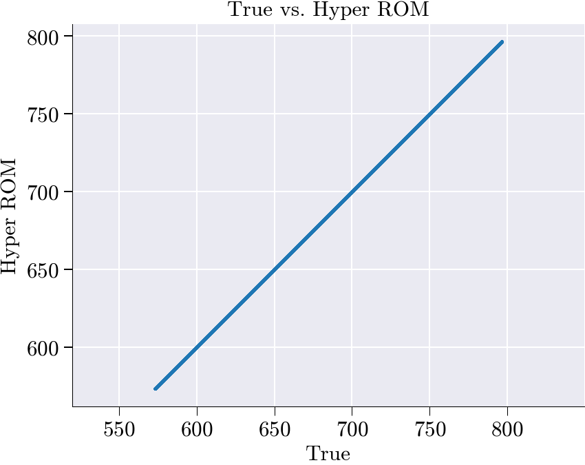
spatial_shape not given → skipping spatial snapshots.
--------------------------------------------------------------------------------------------------------------------------------------------------------------------------------------------------------------------------------------------------------------------------------------------------------------------------------------------------------------------------------------------------------------------------------------------------------------------------------------------------------------------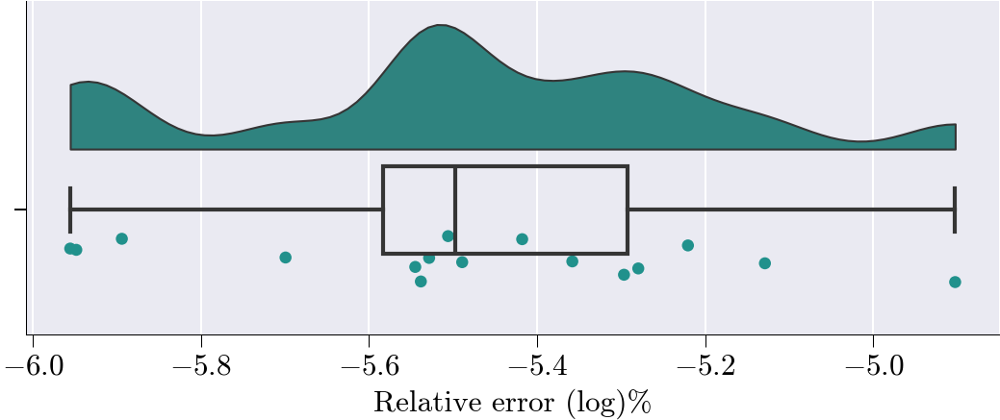
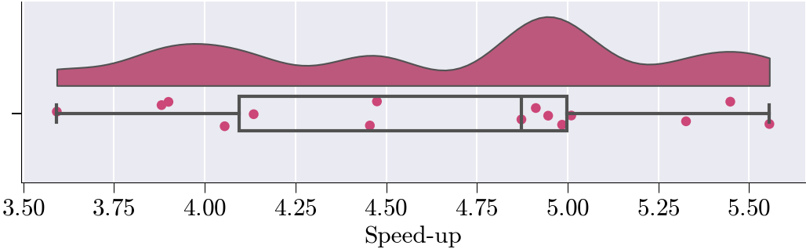
2. DEIM
prob.basis = basis
prob.global_mask = sim_data['global_mask']
prob.mesh = sim_data['mesh'].item()
F_nl = compute_nonlinear_snapshots(
non_linear_func=prob.f_nl,
fos_solutions=fos_solutions[train_mask],
param_list=param_list[train_mask]
)fig, ax = plt.subplots()
for i in range(len(F_nl)):
ax.plot(mesh_domain, F_nl[i])
plt.xlabel('$x$')
plt.ylabel('$q(T,\\beta)$')Text(0, 0.5, '$q(T,\\beta)$')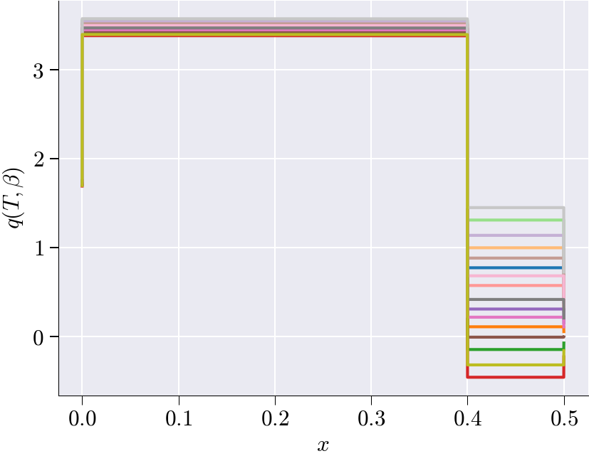
# Force snapshots
deim_class = deim_module.deim(prob.mesh, F_nl, V_sel, tol_f=1e-7, extra_modes = 0)
tic_h_setup_b = time.time()
deim_mat, sampled_rows = deim_class.select_elems()
toc_h_setup_b = time.time()
xi_deim = deim_class.xi
plt.xlabel('POD modes ($r$)')Selected modes:4Text(0.5, 0, 'POD modes ($r$)')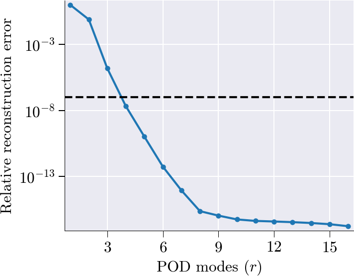
fig, ax = plot_deim_weights(xi_deim.copy())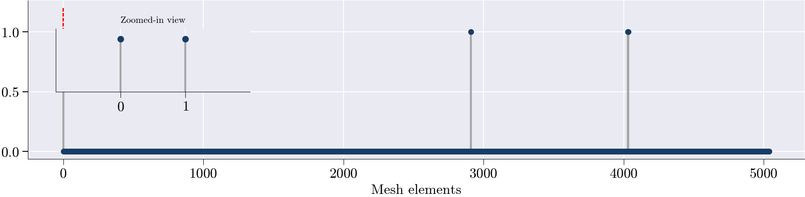
rom.run_hyper_rom_simulation_deim(z = xi_deim, deim_mat = deim_mat, sampled_rows = sampled_rows);Snap 1/32 params=[ 1.85244951 -122.56331742]
[Newton] Iter 0, step norm = 8.889e+02
[Newton] Iter 1, step norm = 9.826e+02
[Newton] Iter 2, step norm = 5.468e+01
[Newton] Iter 3, step norm = 2.807e+00
[Newton] Iter 4, step norm = 4.684e-02
[Newton] Iter 5, step norm = 2.623e-02
[Newton] Iter 6, step norm = 5.685e-04
Snap 2/32 params=[ -1.58873209 320.13616711]
[Newton] Iter 0, step norm = 1.581e+03
[Newton] Iter 1, step norm = 7.839e+01
[Newton] Iter 2, step norm = 1.460e+01
[Newton] Iter 3, step norm = 2.303e+00
[Newton] Iter 4, step norm = 1.247e-01
[Newton] Iter 5, step norm = 1.307e-02
[Newton] Iter 6, step norm = 2.364e-03
Snap 3/32 params=[ -2.09780327 -626.47232227]
[Newton] Iter 0, step norm = 1.072e+02
[Newton] Iter 1, step norm = 6.391e+00
[Newton] Iter 2, step norm = 1.135e+00
[Newton] Iter 3, step norm = 2.197e-02
[Newton] Iter 4, step norm = 1.537e-02
[Newton] Iter 5, step norm = 4.391e-04
Snap 4/32 params=[ 2.33405532 933.41469206]
[Newton] Iter 0, step norm = 1.325e+03
[Newton] Iter 1, step norm = 7.526e+01
[Newton] Iter 2, step norm = 9.607e+00
[Newton] Iter 3, step norm = 7.824e-01
[Newton] Iter 4, step norm = 4.215e-02
[Newton] Iter 5, step norm = 1.448e-03
Snap 5/32 params=[ 3.93349164 -886.0525731 ]
[Newton] Iter 0, step norm = 1.046e+03
[Newton] Iter 1, step norm = 2.249e+01
[Newton] Iter 2, step norm = 3.436e+00
[Newton] Iter 3, step norm = 2.702e-01
[Newton] Iter 4, step norm = 7.912e-03
Snap 6/32 params=[ -3.63458695 672.85787873]
[Newton] Iter 0, step norm = 3.748e+03
[Newton] Iter 1, step norm = 2.039e+02
[Newton] Iter 2, step norm = 4.427e+01
[Newton] Iter 3, step norm = 1.069e+01
[Newton] Iter 4, step norm = 5.876e-01
[Newton] Iter 5, step norm = 1.203e-01
[Newton] Iter 6, step norm = 2.015e-02
[Newton] Iter 7, step norm = 1.537e-03
Snap 7/32 params=[-1.78875804e-01 -3.66522145e+02]
[Newton] Iter 0, step norm = 2.199e+03
[Newton] Iter 1, step norm = 1.300e+02
[Newton] Iter 2, step norm = 1.728e+01
[Newton] Iter 3, step norm = 2.139e+00
[Newton] Iter 4, step norm = 1.191e-01
[Newton] Iter 5, step norm = 7.470e-03
Snap 8/32 params=[ 0.38000161 75.2007775 ]
[Newton] Iter 0, step norm = 8.227e+01
[Newton] Iter 1, step norm = 7.948e+00
[Newton] Iter 2, step norm = 1.201e+00
[Newton] Iter 3, step norm = 1.005e-01
[Newton] Iter 4, step norm = 7.737e-03
Snap 9/32 params=[ 0.85532219 -569.00387257]
[Newton] Iter 0, step norm = 4.001e+02
[Newton] Iter 1, step norm = 1.238e+01
[Newton] Iter 2, step norm = 1.992e+00
[Newton] Iter 3, step norm = 2.374e-01
[Newton] Iter 4, step norm = 9.273e-03
Snap 10/32 params=[-5.87820172e-01 8.72039929e+02]
[Newton] Iter 0, step norm = 1.089e+03
[Newton] Iter 1, step norm = 4.041e+01
[Newton] Iter 2, step norm = 6.976e+00
[Newton] Iter 3, step norm = 1.093e+00
[Newton] Iter 4, step norm = 4.647e-02
[Newton] Iter 5, step norm = 4.884e-03
Snap 11/32 params=[ -3.10067596 -182.282364 ]
[Newton] Iter 0, step norm = 9.142e+02
[Newton] Iter 1, step norm = 7.938e+01
[Newton] Iter 2, step norm = 1.457e+01
[Newton] Iter 3, step norm = 2.546e+00
[Newton] Iter 4, step norm = 1.929e-01
[Newton] Iter 5, step norm = 2.164e-02
[Newton] Iter 6, step norm = 5.108e-03
Snap 12/32 params=[ 3.33314341 375.94890781]
[Newton] Iter 0, step norm = 2.540e+03
[Newton] Iter 1, step norm = 1.244e+02
[Newton] Iter 2, step norm = 1.408e+01
[Newton] Iter 3, step norm = 1.059e+00
[Newton] Iter 4, step norm = 5.082e-02
[Newton] Iter 5, step norm = 1.363e-03
Snap 13/32 params=[ 2.93049683 -422.3349411 ]
[Newton] Iter 0, step norm = 1.217e+02
[Newton] Iter 1, step norm = 1.862e+00
[Newton] Iter 2, step norm = 3.535e-02
[Newton] Iter 3, step norm = 2.084e-02
[Newton] Iter 4, step norm = 8.475e-04
Snap 14/32 params=[ -2.63562099 134.9197682 ]
[Newton] Iter 0, step norm = 2.508e+03
[Newton] Iter 1, step norm = 1.320e+02
[Newton] Iter 2, step norm = 2.703e+01
[Newton] Iter 3, step norm = 5.044e+00
[Newton] Iter 4, step norm = 2.861e-01
[Newton] Iter 5, step norm = 3.840e-02
[Newton] Iter 6, step norm = 6.907e-03
Snap 15/32 params=[ -1.17588099 -824.6778734 ]
[Newton] Iter 0, step norm = 1.104e+03
[Newton] Iter 1, step norm = 5.922e+01
[Newton] Iter 2, step norm = 8.927e+00
[Newton] Iter 3, step norm = 1.313e+00
[Newton] Iter 4, step norm = 7.081e-02
[Newton] Iter 5, step norm = 5.606e-03
Snap 16/32 params=[ 1.38103566 615.3893657 ]
[Newton] Iter 0, step norm = 5.680e+02
[Newton] Iter 1, step norm = 3.917e+01
[Newton] Iter 2, step norm = 5.501e+00
[Newton] Iter 3, step norm = 4.620e-01
[Newton] Iter 4, step norm = 2.936e-02
[Newton] Iter 5, step norm = 5.198e-04# Convert the list of nonlinear hyper-ROM solutions into a NumPy array
NLS_hyper_rom = np.asarray(rom.hyper_rom_solutions)
# Retrieve the raw speed-up factors computed by the ROM
hyper_ROM_speed_up = rom.hyper_speed_up
# Drop the first element (often the full-order baseline) to analyze only relative speed-ups
hyper_ROM_speed_up = hyper_ROM_speed_up[1:]
# Fetch the relative error of the hyper-reduced ROM from the ROM object
hyper_ROM_relative_error = rom.hyper_rom_error# --- Hyper-reduced ROM error analysis ---
# Compute a flat matrix of error metrics comparing true nonlinear solutions to hyper-ROM approximations
matrix = compute_rom_error_metrics_flat(NLS_test, NLS_hyper_rom)
# Produce a text-based report summarizing these hyper-ROM error metrics
generate_rom_error_report(matrix)
# Plot diagnostic figures: error vs. speed-up for the hyper-reduced ROM
plot_rom_error_diagnostics_flat(
NLS_test, # full-order (true) solution snapshots
NLS_hyper_rom, # hyper-ROM-generated solution snapshots
hyper_ROM_relative_error, # precomputed relative error of the hyper-ROM
hyper_ROM_speed_up, # precomputed speed-up factor of the hyper-ROM
sim_axis=['True', 'Hyper ROM'],
metrics=matrix # the matrix of error metrics just computed
)===================
ROM Accuracy Report
===================
Global Errors:
L2 Error: 2.9423e-01
Relative L2 Error: 2.4166e-05
L∞ Error: 4.8814e-02
Relative L∞ Error: 6.1288e-05
RMSE: 1.6575e-02
MAE: 1.2633e-02
Statistical Fit:
R² Score: 1.0000
Explained Variance: 1.0000
Error Distribution:
Median Error: 1.1369e-13
95th Percentile Error: 4.5684e-02
Time/Parameter-Dependent Errors:
Average Rel L2 Error over time/parameter: 1.1855e-06
Max Rel L2 Error over time/parameter: 3.9035e-06
Min Rel L2 Error over time/parameter: 1.1875e-07
――――――――――――――――――――――――――――――――――――――――――――――――――――――――――――――――――――――――――――――――――――――――――――――――――――――――――――――――――――――――――――――――――――――――――――――――――――――――――――――――――――――――――――――――――――――――――――――――――――――――――――――――――――――――――――――――――――――――――――――――――――――――――――――――――――――――――――――――――――――――――――――――――――――――――――――――――――――――――――――――――――――――――――――――――――――――――――――――――――――――――――――――――――――――――――――――――――――――――――――――――――――――――――――――――――――――――――――――――――――――――――――――――――――――――――――――――――――――――――――――――――――――――――――――――――
spatial_shape not given → skipping spatial snapshots.
--------------------------------------------------------------------------------------------------------------------------------------------------------------------------------------------------------------------------------------------------------------------------------------------------------------------------------------------------------------------------------------------------------------------------------------------------------------------------------------------------------------------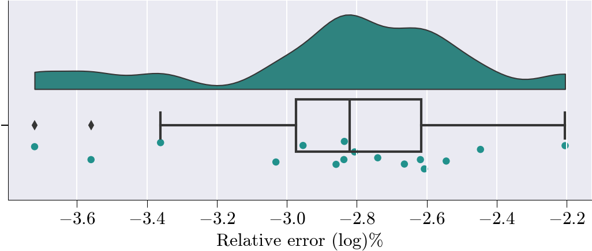
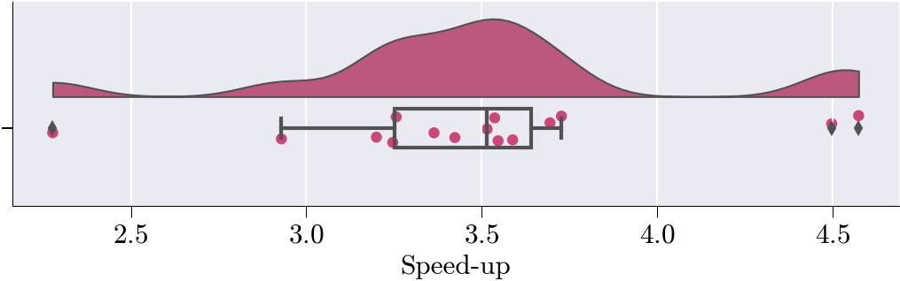